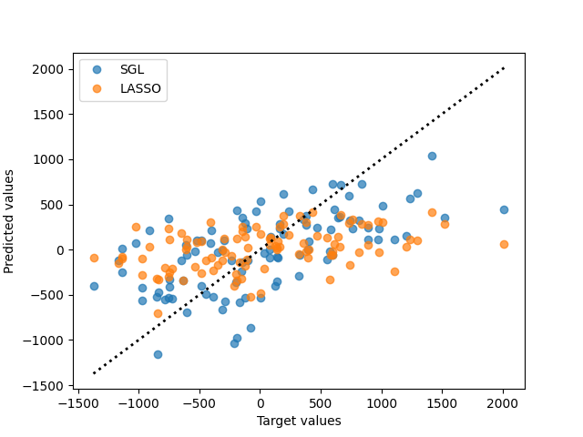

Note
Click here to download the full example code
Sparse Group Lasso for grouped sparse signals¶
Estimates a Sparse Group Lasso model on a simulated sparse signal with high group-level sparsity. The prediction is compared to the ground truth and to the results of a Lasso model.
Out:
/opt/hostedtoolcache/Python/3.7.9/x64/lib/python3.7/site-packages/sklearn/model_selection/_split.py:297: FutureWarning: Setting a random_state has no effect since shuffle is False. This will raise an error in 0.24. You should leave random_state to its default (None), or set shuffle=True.
FutureWarning
/opt/hostedtoolcache/Python/3.7.9/x64/lib/python3.7/site-packages/sklearn/model_selection/_split.py:297: FutureWarning: Setting a random_state has no effect since shuffle is False. This will raise an error in 0.24. You should leave random_state to its default (None), or set shuffle=True.
FutureWarning
Lasso performance:
train: R^2 = 0.600, RMSE = 446.170
test: R^2 = 0.194, RMSE = 610.683
SGL performance:
train: R^2 = 1.000, RMSE = 8.248
test: R^2 = 0.083, RMSE = 651.564
<matplotlib.legend.Legend object at 0x7f62df021410>
import groupyr as gpr
import matplotlib.pyplot as plt
import numpy as np
from sklearn.model_selection import KFold
from sklearn.linear_model import LassoCV
from sklearn.metrics import r2_score, mean_squared_error
from sklearn.model_selection import train_test_split
X, y, groups, coef = gpr.datasets.make_group_regression(
n_samples=400,
n_groups=50,
n_informative_groups=5,
n_features_per_group=20,
n_informative_per_group=18,
noise=500,
coef=True,
random_state=10,
)
X_train, X_test, y_train, y_test = train_test_split(
X, y, test_size=0.25, random_state=10
)
# Fit an SGL model for this data
cv = KFold(random_state=1729)
sgl = gpr.SGLCV(
groups=groups, cv=cv, l1_ratio=[0.0, 1.0], tuning_strategy="bayes", n_bayes_iter=50
).fit(X_train, y_train)
# Fit a Lasso model on this data
cv = KFold(random_state=1729)
lasso = LassoCV(cv=cv).fit(X_train, y_train)
# Print model performance
print("Lasso performance:")
print(
"train: R^2 = {0:5.3f}, RMSE = {1:7.3f}".format(
r2_score(y_train, lasso.predict(X_train)),
np.sqrt(mean_squared_error(y_train, lasso.predict(X_train))),
)
)
print(
"test: R^2 = {0:5.3f}, RMSE = {1:7.3f}".format(
r2_score(y_test, lasso.predict(X_test)),
np.sqrt(mean_squared_error(y_test, lasso.predict(X_test))),
)
)
print("\nSGL performance:")
print(
"train: R^2 = {0:5.3f}, RMSE = {1:7.3f}".format(
r2_score(y_train, sgl.predict(X_train)),
np.sqrt(mean_squared_error(y_train, sgl.predict(X_train))),
)
)
print(
"test: R^2 = {0:5.3f}, RMSE = {1:7.3f}".format(
r2_score(y_test, sgl.predict(X_test)),
np.sqrt(mean_squared_error(y_test, sgl.predict(X_test))),
)
)
# Plot predicted values
plt.plot(y_test, sgl.predict(X_test), marker="o", ls="", alpha=0.7, label="SGL")
plt.plot(y_test, lasso.predict(X_test), marker="o", ls="", alpha=0.7, label="LASSO")
max_val = np.max(
[np.max(y_test), np.max(lasso.predict(X_test)), np.max(sgl.predict(X_test))]
)
min_val = np.min(
[np.min(y_test), np.min(lasso.predict(X_test)), np.min(sgl.predict(X_test))]
)
plt.plot([min_val, max_val], [min_val, max_val], ls=":", lw=2, color="black")
plt.xlabel("Target values")
plt.ylabel("Predicted values")
plt.legend()
Total running time of the script: ( 2 minutes 20.508 seconds)